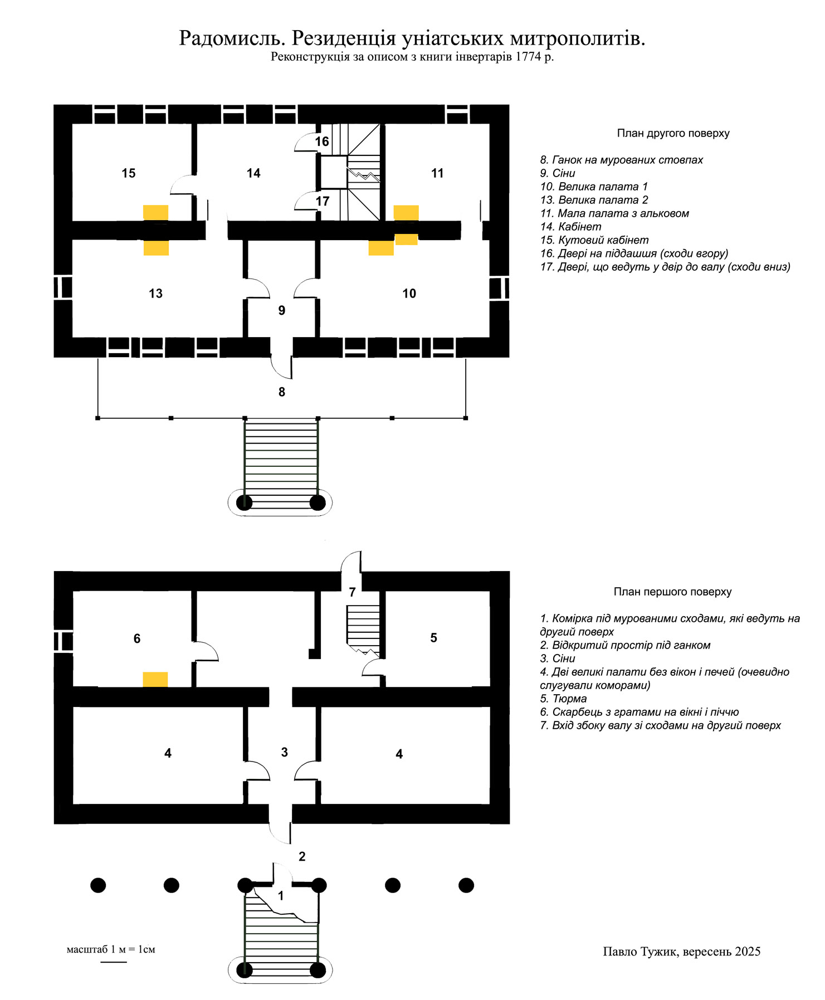
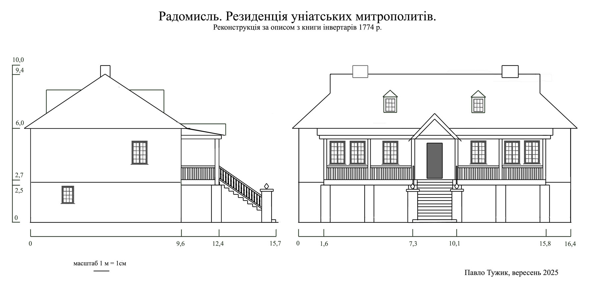
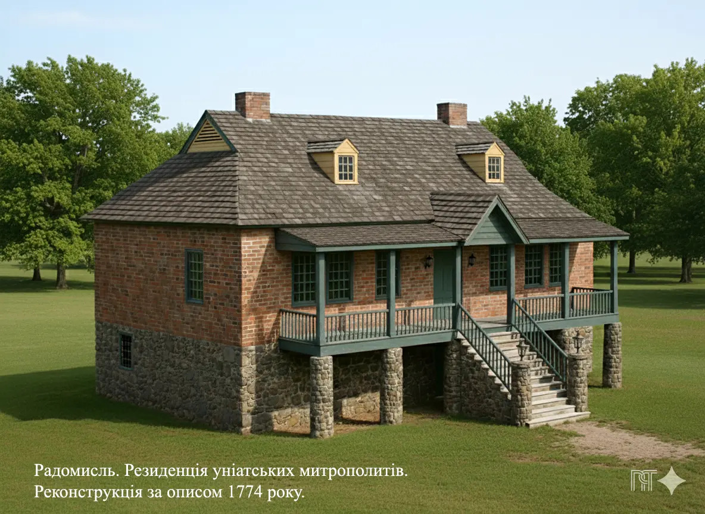

Реконструкція резиденції греко-католицьких митрополитів у Радомислі
«У XVIII столітті Київська унійна митрополича єпархія стала центром тяжіння для унійної церкви всієї України. 1749 року до складу Київської митрополичої єпархії входив 21 деканат з 361 церквою (Радомиський деканат мав 43 церкви).
1752 р. Київська митрополича єпархія налічувала 824 церкви. Тож не дивно, що в середині XVIII століття уніатські митрополити засновують осідок митрополії в Радомислі, за 100 верст від Києва, який належав Росії. У другій половині XVIII ст. Радомисль стає місцем постійного перебування митрополитів, перетворюється на престольне місто української церкви.»(Сайт Київської архиєпархії УГКЦ)
Муровані резиденції — центральна й найцікавіша будівля давнього Радомисля Її план і зовнішній вигляд я спробував відтворити за описом з «Книги інвентарів митрополичої єпархії уніатської церкви» за 1774 рік. Цей опис не був створений для точного картографування будівель, а складався як перелік стану об’єктів та інвентарю. Тому інформації для плану не так багато, як того хотілося б. Проте аналіз описаних у кімнатах об’єктів, їхнє взаємне розташування, розміри, врахування будівельних прийомів та їхніх обмежень дають додаткову інформацію. Таким чином виникає бачення внутрішньої логіки будинку. Врахування історичного часу, його будівельних і технологічних можливостей, традицій додає свої підказки. Так створюється план, а з нього — проекції фасадів. Фасади, своєю чергою, дають зворотний зв’язок і коригують план. У такий спосіб поєднуються розміри, співвідношення елементів та їхнє правильне й можливе розташування. За проєкціями стін уже можна створити тривимірний ескіз.
План резиденції — це не сходи Пенроуза, які можуть існувати лише як ілюзія на папері, а розрахована основа, за якою можливо збудувати будинок.
Перша версія плану й 3D-проєкції була створена у 2022 році. Проте час не стоїть на місці, технології розвиваються. Тож у мене виникла ідея застосувати новий інструмент — нейромережу, щоб відтворити будинок резиденції уніатських митрополитів у реалістичній фотографічній якості. Це вийшло досить непогано, але, розглядаючи фотозображення, я зрозумів: хоча така конструкція ґанку технічно можлива, вона недоцільна з різних точок зору. Тож я вирішив глибше зануритися в деталі, усе переосмислити й скорегувати.
Впевнений, версія резиденції 2025 року стала точнішою за планом і максимально наближеною до її вигляду. За описом 1774 року будинок перебував у занепаді, тоді як моя „фотографія“ показує його ще новозбудованим. За стилем, імовірно, він був зведений у середині XVIII століття.
Отже, план:
 Додаю опис. Для зручності сприйняття й зіставлення я розбив його на окремі пункти та додав коментарі.
Перший поверх
- Від комори по праву руку розташовані муровані резиденції, вхід до яких з дитинця. (Дитинець замку — його головна частина, укріплена валом і високими загостреними дубовими палями. За планом Радомисля 1800 року він розташовувався на місці, де нині стоять греко-католицька каплиця, спортзал і будинок культури. Вхід до дитинця, згідно з тим самим планом, був із північно-східного боку).
- Вони є двоповерхові, в середині мурів сходи муровані з дерев'яним точеним поруччям, перед ними два круглі муровані стовпи для ліхтарів. (1. Вираз «в середині» — помилковий, правильно буде «посередині», що стає зрозуміло далі за описом. 2. Сходи зовнішні, отже, не захищені від погодних умов, тому вважаю їх краще збудувати з каменю. Муровані круглі стовпи, не буду перераховувати, мають ще більше причин, бути виконаними з каменю).
- Під сходами комірка мурована порожня, без жодного замка. (На плані будинку позн. 1).
- Навпроти цієї комірчини посередині першого поверху вхід до сіней, також без замка, а з сіней праворуч і ліворуч є палати порожні без вікон, дверей і печей. (Позн. 3 і 4)
- На куті того ж поверху — тюрма, також без вікон і дверей порожня, а на іншому куті від фільварку на цьому ж поверсі скарбець, до якого дубові двері на завісах з замком критим. (Фільварок, за мапою 1800 року, знаходився внизу вздовж р. Тетерева, там, де зараз вулиця Троїцька. Звідси скарбець на лівому куті будинку — позн. 6, а тюрма відповідно на правому — позн. 5).
- Там всередині з лівого боку біля дверей піч з кахелю в блакитні квіти, знизу біла і вікно велике з залізними ґратами.
- У цьому скарбцю є: скриня одна велика, друга менша для зберігання паперів, запечатані двома печатками.
- А ключ від цього скарбця у магазинового писаря.
Другий поверх
- Увійшовши сходами на другий поверх, перед вікнами і дверима вздовж мурів — ґанок, тобто піддашшя на стовпах мурованих з дерев'яним поруччям у формі штахет. (Схоже, що ґанок був збудований на довжину всього фасаду; дерев’яний, у стилі XVIII століття, розташований на мурованих стовпах. Мені видається логічним, що вони повинні бути конструктивно і стилістично відповідними стовпам з ліхтарями, тобто бути круглими і з каменю).
- Перед сходами — двері соснові на завісах, увійшовши якими до сіней (позн. 9) — праворуч зала, тобто велика палата (позн. 10), до якої двері соснові на завісах одинарні з французьким замком, а в цій залі ліворуч піч жовтого глазурованого кахелю, при ній камін, вимуруваний у стіні без жодної форми; тафльових вікон, оправлених у дерево, чотири, і підлога з соснових дощок.
- У тій залі є двері до малої палати на завісах з клямкою і замком, навпроти дверей вікно одне, при дверях з лівого боку дерев'яна шафка, там же ніби на алькові перегородка з соснового дерева, де піч з глазурованого кахелю, при якій комин, виведений на дах (позн.11).
- По лівій стороні в сінях зала, тобто друга велика палата, до якої двері на завісах з внутрішнім замком (позн.13).
- Увійшовши тими дверима до неї, праворуч піч з глазурованого кахелю і комин мурований, на дах виведений, а зліва — мальована шафа з двома перегородками і з замком.
- У цій палаті вікон тафльових чотири, в дерево оправлених, з неї до першого кабінету — фасовані соснові двері одинарні на завісах (позн. 14).
- Коло цих дверей у палаті ціла стіна, оббита мальованим полотном.
- У цьому кабінеті двоє вікон тафльових простої роботи, оправлених у дерево, з нього до кутового покою двері з внутрішнім замком і завісами (позн. 15).
- У ньому піч жовта глазурована і камін, виведений на дах (тут помилка автора чи перекладу з польської — komin, kominek, — чи при копіюванні. Дослідження і логіка говорять, що правильно буде: «комин, виведений на дах»), тут же двоє вікон тафльових, так само в дерево оправлених,
- з того покоїку двоє дверей, одні — на піддашшя, а другі — у двір до валу, від котрого мур скрізь псується. (Тут очевидно помилка: з кутового кабінету неможливо мати вихід у двір, бо на першому поверсі — скарбець. Це речення підходить до попередньої кімнати (позн. 14), де добре вписується вихід через одні двері сходами на піддашшя /тут горище/ (позн. 16) і вихід через другі двері (позн. 17) сходами у двір).
- Вся підлога в цьому будинку викладена сосновими дошками, а стіни всередині пообсипалися, і дах скрізь протікає. (Це вказує на те, що станом на 1774 рік будинок піддався занепадінню).
Наступний етап реконструкції це створення остаточного виду головного і бічного фасадів будинку.

Останній етап реконструкції, це побудова за допомогою нейромережі фотореалістичної 3D-проєкції.

Було непросто зробити реконструкцію, використовуючи не спеціалізовану, а мовну модель ШІ. Проте завдяки «хитрощам» у спілкуванні з нею і фотошопу, вдалося досягти потрібного результату. Залишилися лише кілька незначних деталей, які майже непомітні й не впливають на загальну картину.
Дерева за будинком — умовний фон. Насправді вже за кілька метрів від його тилового фасаду проходив вал із вкопаними загостреними дубовими палями заввишки кілька метрів, що слугував захисною огорожею дитинця замку. Від валу схили спадали в глибокий природний яр, який продовжувався ровом. Він пролягав на місці сучасної вулиці Міськради — до будинку Пенсійного фонду, а далі повертав праворуч у бік готелю «Карпатія»
Лівий бічний фасад із загратованим вікном скарбця за описом був зорієнтований у бік фільварку. За планом Радомисля 1800 року, він розташовувався під дитинцем замку, на місці теперішньої вулиці Троїцької. Поряд із загратованим вікном скарбця згадується вхід у мурований льох: «Зійшовши вниз з цих резиденцій, біля палів коло скарбця є льох мурований, до якого від тих же палів двері на завісах, одні з защіпкою, а другі, далі до льоху, дубові з внутрішнім замком. А там далі з одного боку прибудова завалилась».
У 70-х роках ХХ століття, під час прокладання теплотраси до будинку культури, цей льох було виявлено: траншея пройшла по вхідному тунелю й відкрила мури старовинного склепіння. З боку річки Тетерева він давно був завалений, а з протилежного боку зберігалося приміщення, що залишилося неушкодженим. Згодом пролом засипали сміттям. Він знаходився приблизно за чотири-п’ять метрів від тодішньої районної бібліотеки (нині — римо-католицька каплиця). Фактично цей льох — найстаріша споруда міста, прихована під землею, і водночас усе, що залишилося від митрополичої резиденції на дитинці.
І наостанок. Мені здалося замало побачити, як виглядав будинок резиденції митрополитів удень, під сонячним світлом, тож уночі я запалив свічки та масляні ліхтарі. Що з цього вийшло, можна побачити в цьому ролику.